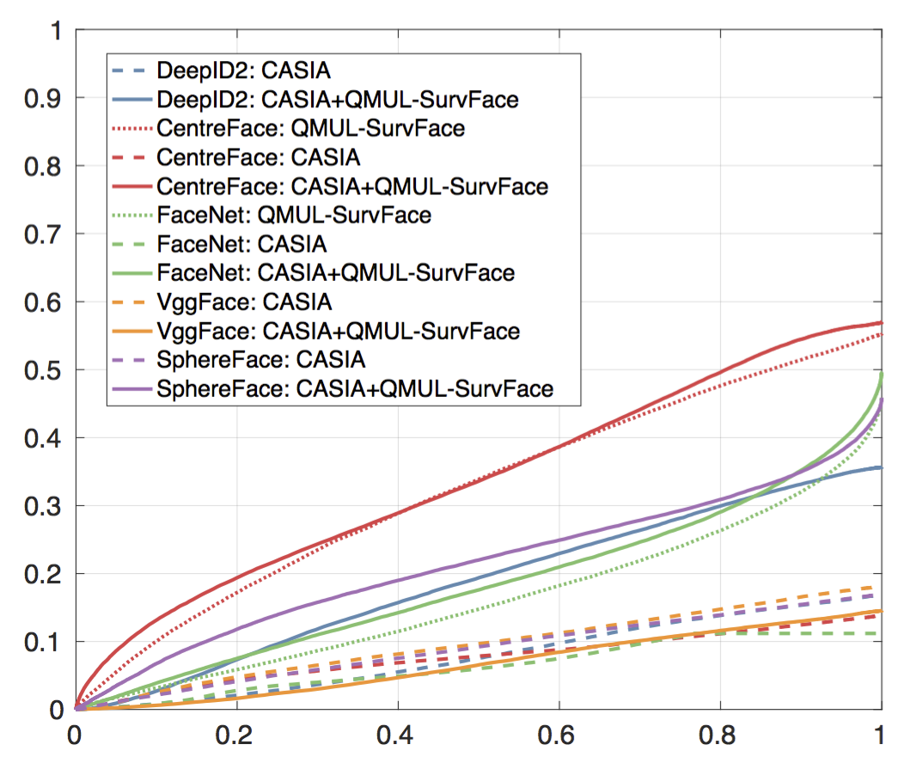

Surveillance Face Recognition Challenge
- DeepID2 - Sun Y et al. Deep learning face representation by joint identification-verification NIPS 2014.
- CentreFace - Wen Y et al. A discriminative feature learning approach for deep face recognition ECCV 2016
- FaceNet - Schroff F et al. Facenet: A unified embedding for face recognition and clustering CVPR 2015.
- VggFace - Parkhi O M et al. Deep Face Recognition BMVC 2015.
- SphereFace - Liu W et al. Sphereface: Deep hypersphere embedding for face recognition CVPR 2017.
Benchmark
For details on the evaluation scheme please see our paper.
Identification
We apply the open-set protocol for identification. Metric: TPIR20@FNIR
Performance curves
